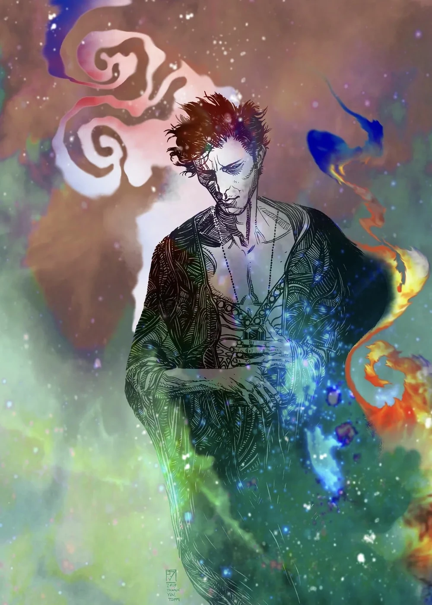
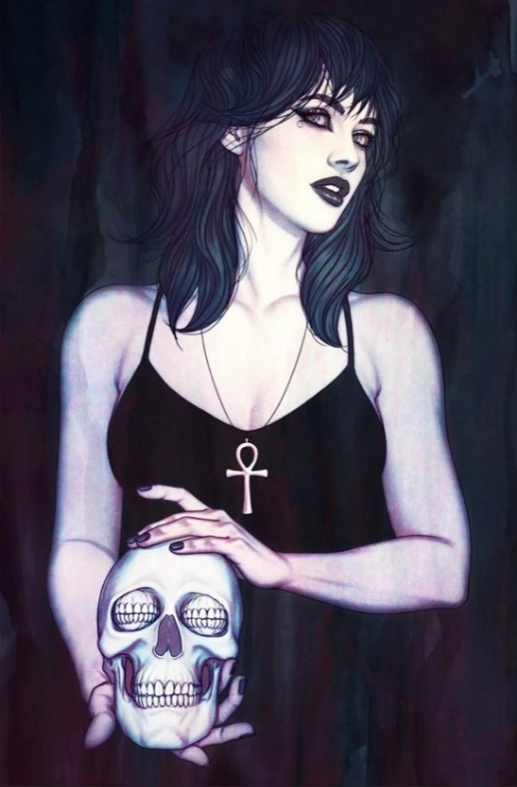
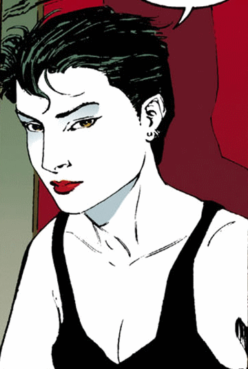
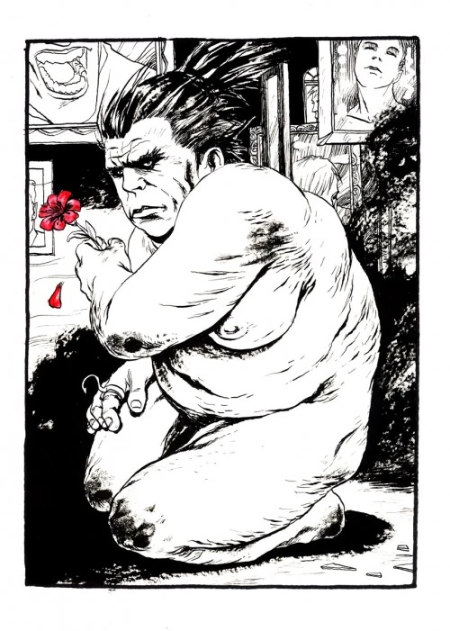
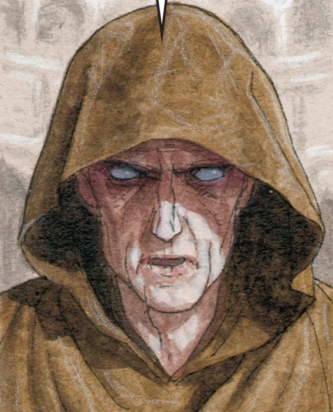
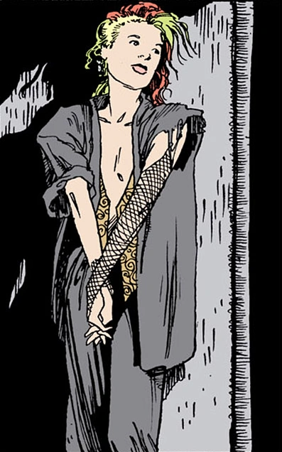
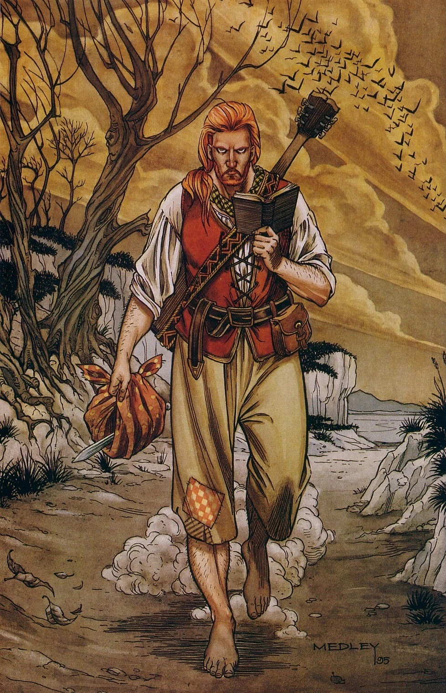

Dream
Dream is the lord of all dreams. He controls the world of sleep and imagination, shaping the stories we experience in our minds at night.

Death
Death is the guide for every soul at the end of life. Gentle, inevitable, and wise, she helps the living understand that death is a natural part of existence

Desire
Desire represents want, temptation, and attraction. Everything we long for or crave comes from their influence

Despair
Despair embodies hopelessness and sadness. She exists wherever people feel lost or overwhelmed by negative emotions.

Destiny
Destiny sees the past, present, and future. He holds the book of fate and watches over the paths every being will take.

Delirium
Delirium embodies chaos, madness, and strange perception. She represents the confusing, unpredictable side of reality.

Destruction
Destruction is the force behind change and endings. He leaves destruction behind not to harm, but to allow transformation and new beginnings.